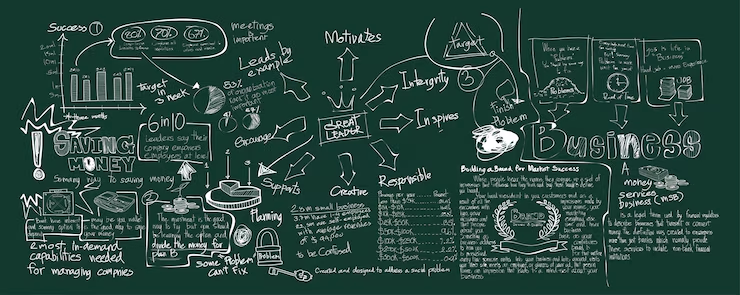

Proyectos
A continuación, se presentan distintos proyectos desarrollados a lo largo del tiempo, reflejando un proceso de aprendizaje y crecimiento técnico progresivo. Estos trabajos abarcan desde demostraciones técnicas bidimensionales realizadas en GameMaker, enfocadas en la experimentación con mecánicas básicas, lógica de juego y prototipado rápido, hasta el proyecto actual, desarrollado en un entorno tridimensional, donde se integran conceptos más avanzados como la construcción de mundos, interacción compleja y mayor profundidad en el diseño de experiencias interactivas. Este recorrido evidencia la evolución tanto en las herramientas utilizadas como en la ambición de los proyectos, pasando de pruebas funcionales y sistemas aislados en 2D a una producción más estructurada y completa en 3D, con un enfoque más sólido en la inmersión, la jugabilidad y la construcción de experiencias más completas.

Proyectos Realizados
Masked Authority
Masked Authority es un RTS ambientado en un estado autoritario distópico donde los obreros se generan automáticamente desde el centro urbano y son enviados a instalaciones industriales para sostener la producción del régimen; mientras trabajan, su nivel de influencia disminuye, y al llegar a cero pueden manifestarse o provocar disturbios que se propagan, creando focos de inestabilidad. El sistema de máscaras representa la lealtad: según la influencia, tanto obreros como policías pueden cambiar de bando, dejando de obedecer al régimen o incluso volviéndose contra él. El jugador gestiona fuerzas policiales para vigilar zonas, contener protestas y recuperar el control, equilibrando represión y presencia, ya que una tensión social excesiva o una respuesta lenta aceleran el colapso. El objetivo es resistir 5 minutos manteniendo la estabilidad sin que los rebeldes destruyan los tres edificios gubernamentales, sosteniendo un orden artificial dentro de un sistema que se deteriora constantemente.
Truco Online
Desarrollado en Unity, este es un juego 3D ambientado en un mundo de fantasía medieval donde el jugador progresa enfrentando enemigos en un entorno abierto, mejorando sus armas y habilidades mientras avanza en una narrativa que da sentido a su misión. Inicialmente concebido como un MMORPG, el proyecto comienza con una experiencia offline centrada en el combate contra criaturas como lobos salvajes, esqueletos, nigromantes y golems, cada uno con comportamientos únicos. El mundo se construye con una fuerte identidad visual mediante escenarios medievales detallados, incluyendo aldeas, castillos y estructuras diseñadas para reforzar la inmersión y el desarrollo del jugador.
Galagaxian
Desarrollado en Unity, este es un juego 3D ambientado en un mundo de fantasía medieval donde el jugador progresa enfrentando enemigos en un entorno abierto, mejorando sus armas y habilidades mientras avanza en una narrativa que da sentido a su misión. Inicialmente concebido como un MMORPG, el proyecto comienza con una experiencia offline centrada en el combate contra criaturas como lobos salvajes, esqueletos, nigromantes y golems, cada uno con comportamientos únicos. El mundo se construye con una fuerte identidad visual mediante escenarios medievales detallados, incluyendo aldeas, castillos y estructuras diseñadas para reforzar la inmersión y el desarrollo del jugador.
Tetris
Desarrollado en Unity, este es un juego 3D ambientado en un mundo de fantasía medieval donde el jugador progresa enfrentando enemigos en un entorno abierto, mejorando sus armas y habilidades mientras avanza en una narrativa que da sentido a su misión. Inicialmente concebido como un MMORPG, el proyecto comienza con una experiencia offline centrada en el combate contra criaturas como lobos salvajes, esqueletos, nigromantes y golems, cada uno con comportamientos únicos. El mundo se construye con una fuerte identidad visual mediante escenarios medievales detallados, incluyendo aldeas, castillos y estructuras diseñadas para reforzar la inmersión y el desarrollo del jugador.
Galaxxy Crusader
Desarrollado en Unity, este es un juego 3D ambientado en un mundo de fantasía medieval donde el jugador progresa enfrentando enemigos en un entorno abierto, mejorando sus armas y habilidades mientras avanza en una narrativa que da sentido a su misión. Inicialmente concebido como un MMORPG, el proyecto comienza con una experiencia offline centrada en el combate contra criaturas como lobos salvajes, esqueletos, nigromantes y golems, cada uno con comportamientos únicos. El mundo se construye con una fuerte identidad visual mediante escenarios medievales detallados, incluyendo aldeas, castillos y estructuras diseñadas para reforzar la inmersión y el desarrollo del jugador.